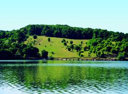
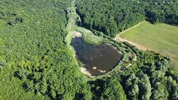

Rezervațiile Naturale

Rezervația Naturală Codrii
Rezervația Naturală Codrii este una dintre cele mai mari și importante rezervații naturale din Republica Moldova. Situată în zona centrală a țării, această rezervație găzduiește o varietate de specii de plante și animale rare.
Rezervația Naturală Pădurea Domnească
Rezervația Pădurea Domnească este cunoscută pentru pădurile sale dense și pentru peisajele naturale deosebite. Aici poți găsi o varietate de specii de plante și animale unice în Moldova.

Rezervația Naturală Plaiul Fagului
Plaiul Fagului este o rezervație naturală importantă din zona de nord a Republicii Moldova, cunoscută pentru peisajele sale pitorești și biodiversitatea bogată.